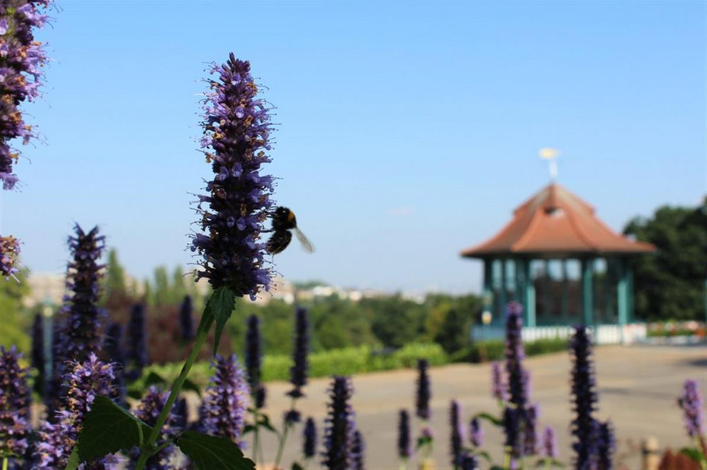

Nick Merriman, chief executive of the Horniman Museum & Gardens. Photo by Tania Dolvers
Nick Merriman, chief executive of the Horniman Museum & Gardens. Photo by Tania Dolvers
The chief executive of the Horniman Museum argues that museums need to use their influence to turn visitors into environmental activists.
Nick Merriman, August 12, 2020
Our planet is in deep trouble, assailed by inter-related crises of climate, biodiversity, and pollution. Museums and galleries can—and must—have a fundamental role in speaking out about these crises and in charting a greener future before it is too late.
The cessation of normal life during lockdown allows museums to perform a reset of purpose and expectations in favor of creating a more sustainable and equitable future. Institutions need to look around the blinders of short-term concerns about funding and politics and strive to both become more green within their own operations, and to leverage their influence to engage the public in environmental action.
Public Trust
Public surveys repeatedly show that museums are among a dwindling band of organizations that retain the public’s trust. They also have major pulling power: in the UK alone, before the pandemic, over 85 million visits were made to museums and galleries each year—more than the combined annual attendance at soccer matches. Museums are institutions of the long term, holding their collections in trust on behalf of the public for the present and future.
Generally, this has meant that museums have chosen to adopt a tone of what the Canadian museologist Robert Janes calls “authoritative neutrality.” Museums have acted as if they were entirely neutral and balanced in all that they do, but when they do that, they make the faulty assumption that the existing status quo has not emerged as a result of unequal power structures that have tended towards neoliberalism and away from the interests of the wider public.

Pollinator Bed in Horniman Gardens. Photo by Polly Heffer.Maintaining a stance of authoritative neutrality as we sleep-walk into the Earth’s sixth mass extinction event is no longer tenable. We must also be clear that environmental and social issues are inextricably linked: those in the global South and the less advantaged in the North are impacted worst.
Museums must use their position as long-term memory institutions to look beyond short-term political and funding cycles and speak out about issues that are existential threats to all of us. This involves changes in two main areas: in museums and galleries’ operating models, and in their relationship with the public.
Going Green
For around the last quarter century, funders and boards have expected the model for museums and galleries to be one of constant growth. More visitors and greater income are promised each year, leading to more expansion. This is not only an unsustainable model, it is a highly precarious one, and its vulnerability has been exposed by the pandemic. We must now transition to a more sustainable model that is based on serving a greater diversity of our citizens, and providing a better quality experience for them.
International touring exhibitions will have to be reduced. We will have fewer exhibitions, which will be on view for longer. We will need greater collaboration at the national and global scale, such as the newly established Museums and Galleries Network for Exhibition Touring (MAGNET), which will see 12 UK museums share resources to produce a series of collections-based exhibitions to tour among groups of partners.
“Greening” initiatives will have to be accelerated so that museums and galleries become greenhouse-gas neutral and less polluting within the next two decades. A major investment is needed to transition away from natural gas heating in our buildings to green electricity; something equivalent to the move away from coal to gas heating a century ago, and requiring government investment.
A visitor admiring a moon jellyfish in the Horniman Aquarium.
Creating a Movement for Change
But making museums and galleries greener themselves is, of course, only a tiny part of the changes that are needed to mitigate some of the climate and ecological crises bearing down on us. The really significant transformations have to be made at the level of governments and corporations. The main impact museums and galleries can have is by engaging visitors to make their own changes to live more sustainably, and to become active citizens by voting and lobbying for change.
Museums are well practiced in developing exhibitions, events, and activities to engage audiences with key issues. The work of artists, in particular, brings the emotional perspective which psychological research shows is needed to prompt action. An acceleration in this work is necessary given the urgency of the climate and ecological breakdown.
Some museums are planning to engage their publics more actively. For example, the Horniman Museum is developing an Environmental Champions scheme, which will help committed families meet their sustainability goals by bringing them into a supportive network of like-minded people and providing them with the inspiration and tools they need. The scheme will also connect them with organizations that are pushing for action at the level of government and business. If every museum and gallery—and every heritage organization—did something similar, we would see a widespread movement for change.
In November 2021, the UK hosts COP26, the UN Climate Change Conference, which has been described as the last major chance to mitigate the climate and ecological crisis before it becomes too late. Museums and galleries need to use their trusted status and their reach to call loudly for action. This is not about party politics, as the science is indisputable. It is about museums fulfilling their role as institutions of the long term to speak out about a threat which is so great that it dwarfs everything else we are facing.
Nick Merriman is the chief executive of the Horniman Museum and Gardens in London.
SOURCE: ARTNET NEWS